Analiza rješenja · JOI Spring Camp 2017 · Dan 2
Putovanje željeznicom
O ovom članku
Tekst je prijevod službene japanske prezentacije rješenja, preoblikovan u članak. Slajdovi su ugrađeni kao slike; natpis pod svakim slajdom je prijevod teksta na njemu. Dijelovi označeni kao trenerska napomena nisu u izvornoj prezentaciji — dodani su da popune korake koje slajdovi preskaču ili samo skiciraju.
Slajdovi
Zadatak
izvorni slajdovi 1–5
-
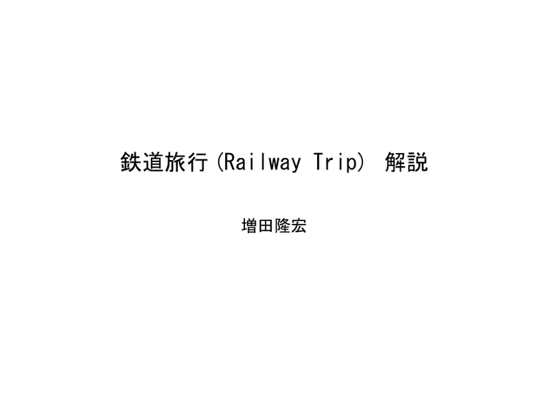
1Naslov; analiza: Masuda Takahiro. -
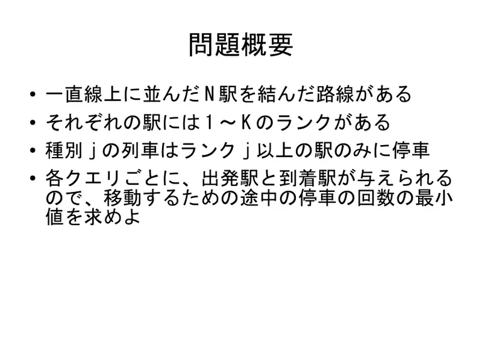
2$N$ postaja s razinama; vlak $j$ staje na razini $\ge j$; upiti: min međustajanja. -
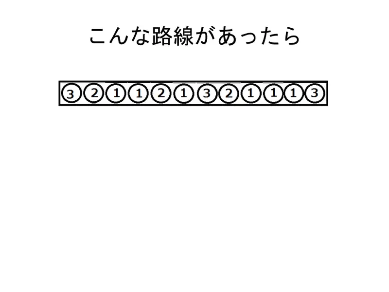
3Primjer pruge. -
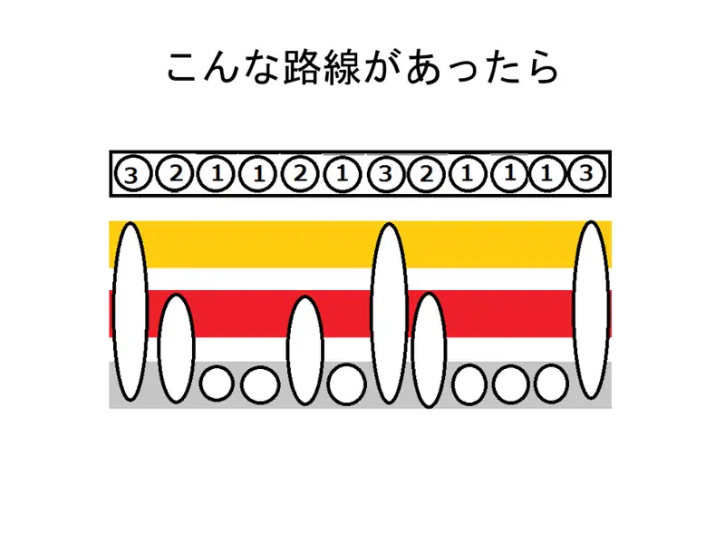
4Primjer. -
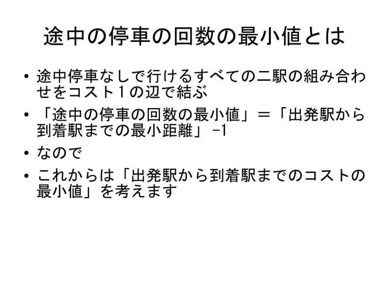
5Bridovi cijene 1 među parovima dostižnim bez stajanja; odgovor = udaljenost $-1$.
← → tipke ili klik na sliku
Podzadaci 1–2 20 bodova
Koraci algoritma
Graf i BFS
izvorni slajdovi 6–9
-
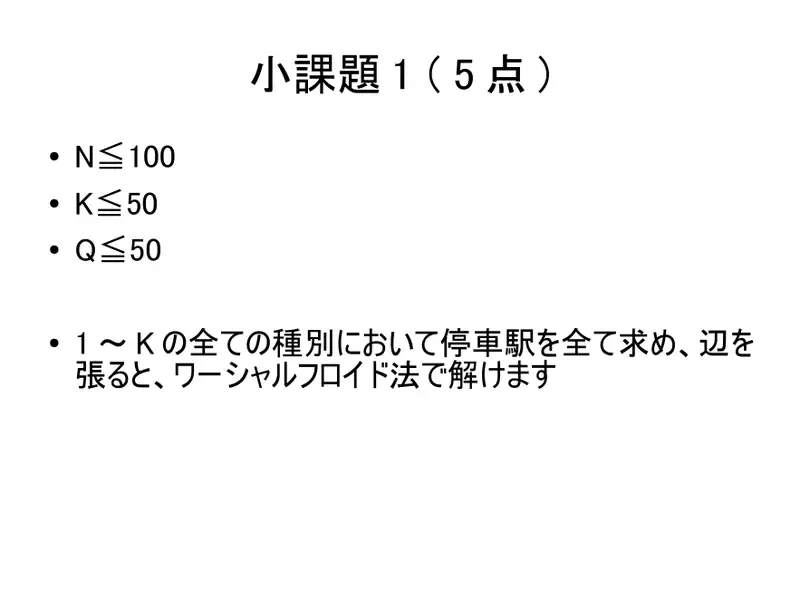
6Sve postaje svih tipova, Floyd–Warshall. -
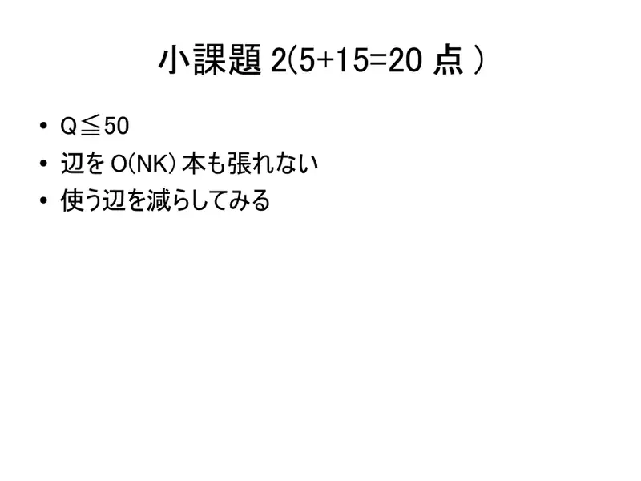
7$O(NK)$ bridova previše; smanji. -
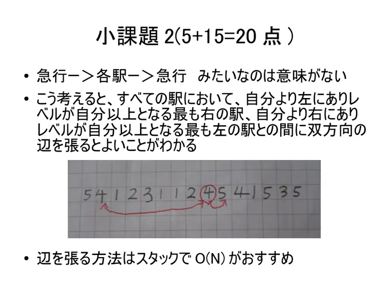
8Brzi→spori→brzi besmisleno; bridovi do najbližeg lijevog/desnog s razinom $\ge$; stog $O(N)$. -
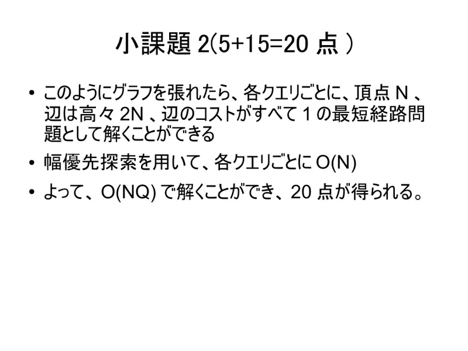
9$\le2N$ bridova, BFS po upitu: $O(NQ)$.
← → tipke ili klik na sliku
Podzadatak 3 25 bodova
Koraci algoritma
Stablo intervala
izvorni slajdovi 10–19
-
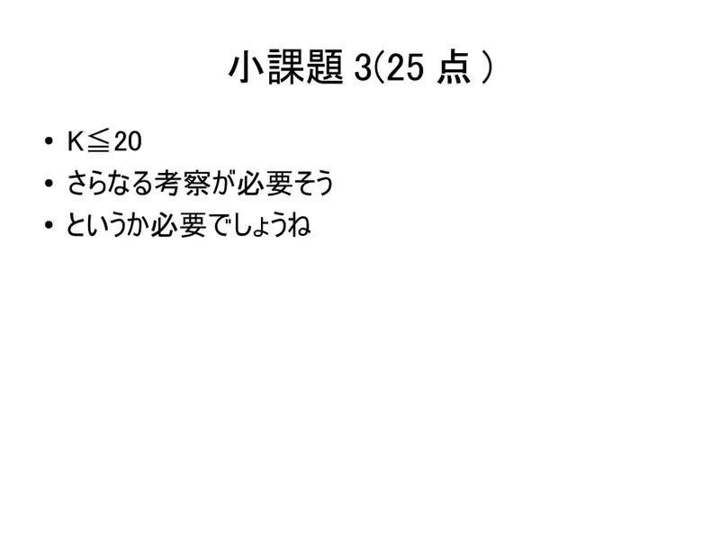
10$K\le20$: treba još. -
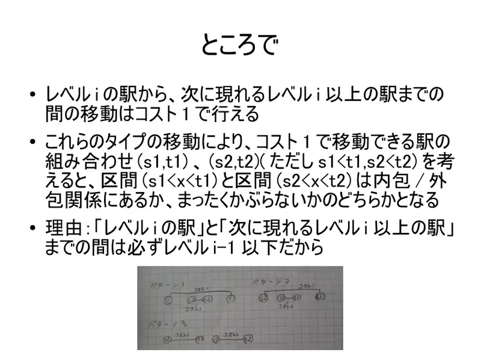
11Intervali skokova su ugniježđeni ili disjunktni (između su niže razine). -
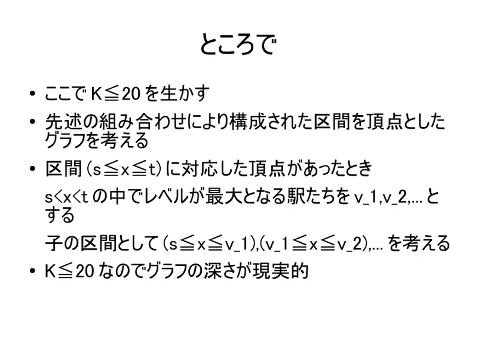
12Graf intervala kao stablo; djeca: podijeli po najvišim postajama unutra; dubina $\le K$. -
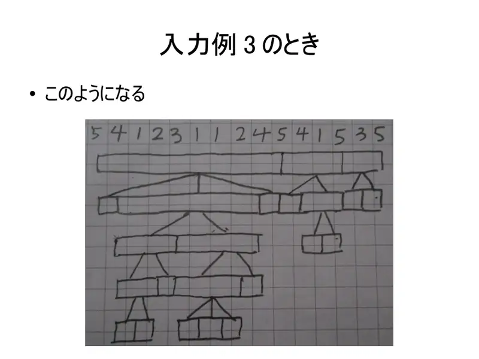
13Primjer 3 kao stablo. -
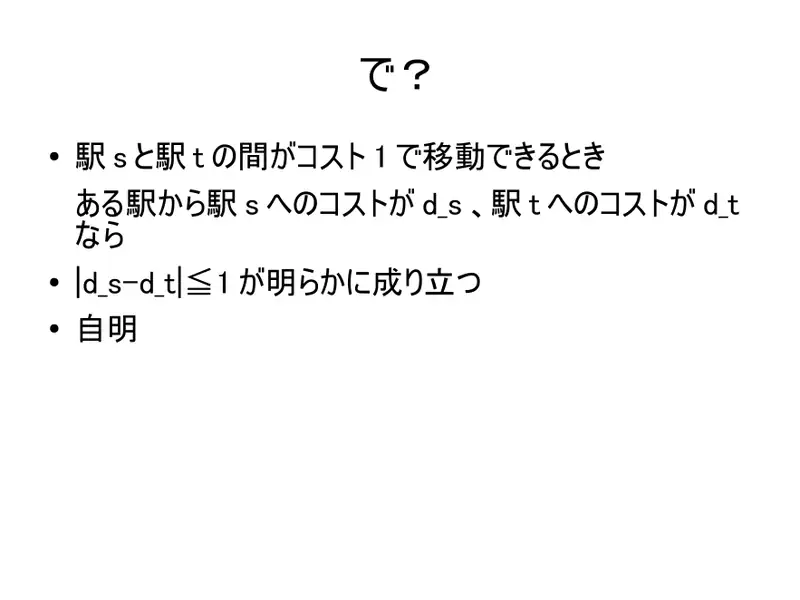
14Krajevi $s,t$ jednog brida: $|d_s-d_t|\le1$. -
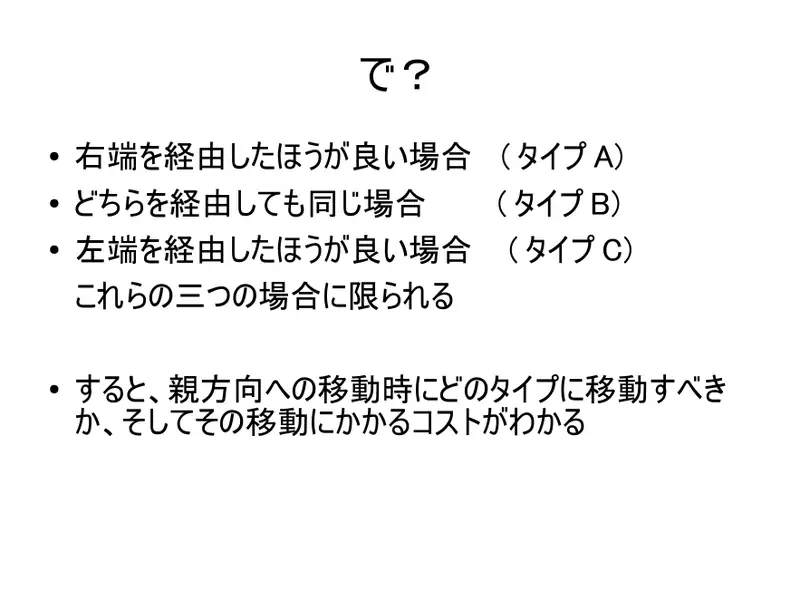
15Tri tipa: bolje preko desnog, jednako, bolje preko lijevog; prijelaz prema roditelju određuje tip i cijenu. -
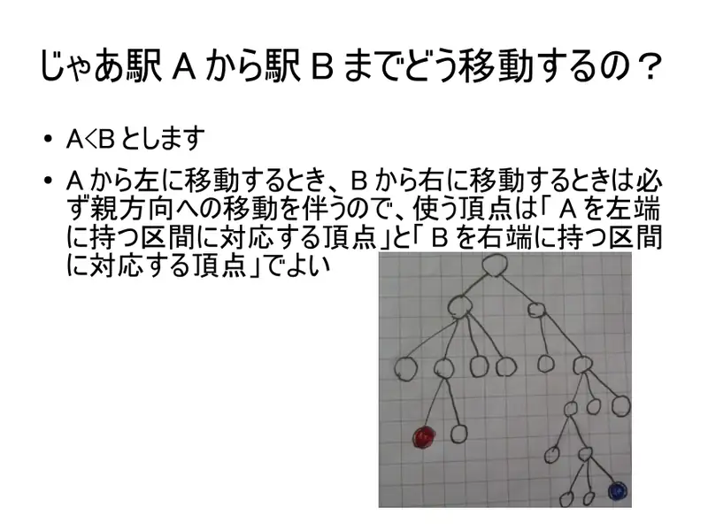
16Od $A$ do $B$ ($A\lt B$): koriste se interval s lijevim krajem $A$ i interval s desnim krajem $B$. -
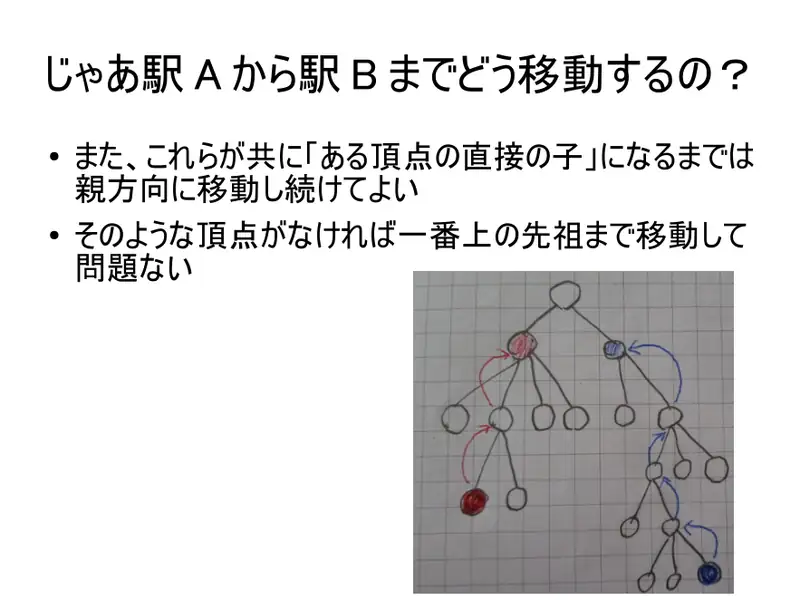
17Dižemo se dok oba nisu djeca istog čvora (ili do korijena). -
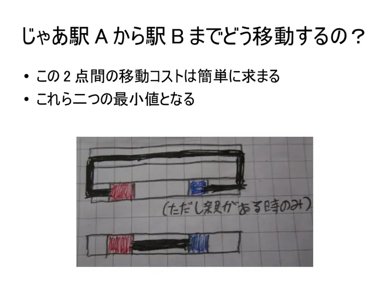
18Cijena između dva: minimum dviju mogućnosti. -
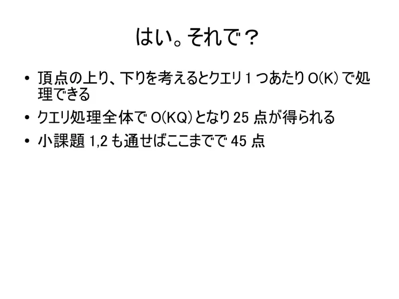
19$O(K)$ po upitu.
← → tipke ili klik na sliku
Puno rješenje 55 bodova
Koraci algoritma
Doubling
izvorni slajdovi 20–21
-
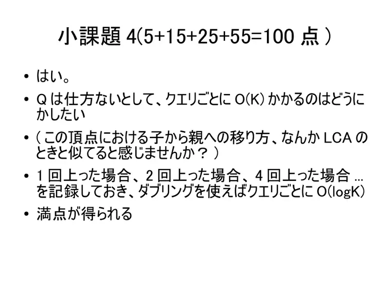
20Dizanje sliči LCA-u: zapamti 1, 2, 4… koraka — $O(\log K)$ po upitu. -
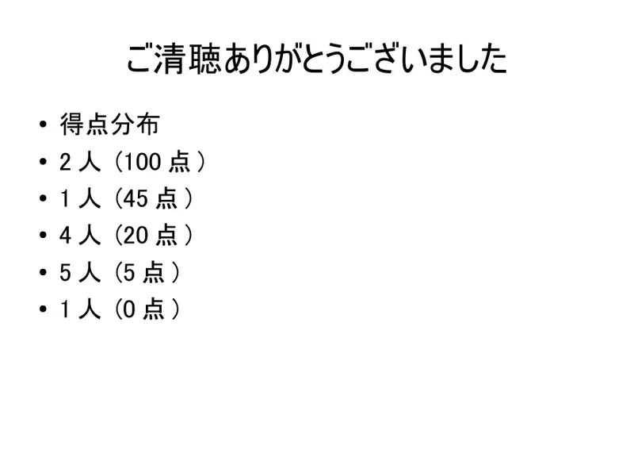
21Bodovi: 100 (2), 45 (1), 20 (4), 5 (5), 0 (1).
← → tipke ili klik na sliku
Sažetak
- Bridovi do najbližeg $\ge$ lijevo/desno; laminarnost → doseg je interval.
- Doubling nad $(l,r)$; upit obostrano dizanje, $O(\log N)$.